ลอกบ่อพักและท่อระบายน้ำ
สำหรับหมู่บ้านจัดสรรและงานโครงการ
ทีมตุ่นมุดท่อรับงานเคลียร์ตะกอน ดิน โคลน และสิ่งอุดตัน ทั้งงานบำรุงรักษาระบบระบายน้ำส่วนกลางและงานเตรียมส่งมอบโครงการ พร้อมภาพก่อน-หลังและรายงานผลตามขอบเขตงาน
หมู่บ้านจัดสรร / นิติบุคคล
ดูแลระบบส่วนกลาง
ไซต์ก่อสร้าง / ผู้รับเหมา
เตรียมตรวจรับมอบงาน
ภาพก่อน-หลัง / รายงาน
ตรวจรับงานตามขอบเขต
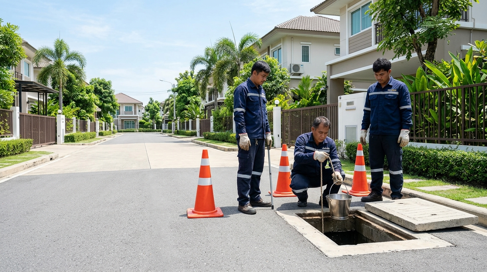
ตัวอย่างงานจริงจากพื้นที่โครงการที่เราเคยเข้าดำเนินการ
ภาพจากการปฏิบัติงานลอกบ่อพักและท่อระบายน้ำ เพื่อให้เห็นสภาพหน้างาน ขั้นตอนการดำเนินงาน และรายละเอียดหลังปฏิบัติงาน
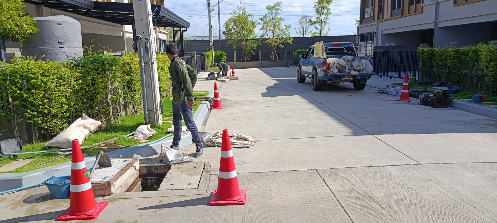
หมู่บ้านจัดสรรเตรียมพื้นที่ปฏิบัติงานในซอยหมู่บ้าน
กั้นกรวยจราจรแจ้งเตือนรอบบ่อพักและจัดการสัญจร เพื่อไม่ให้กระทบการเดินทางเข้า-ออกของลูกบ้าน
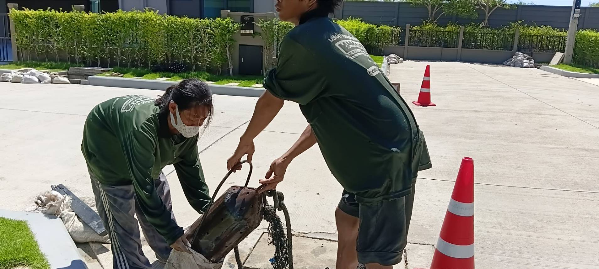
การลอกตะกอนนำตะกอนและโคลนสะสมออกจากบ่อพัก
ใช้กระบอกตักเลนเหล็กดึงตะกอนก้นบ่อขึ้นมาถ่ายเทลงในกระสอบอย่างมิดชิด ป้องกันดินโคลนเลอะผิวถนน
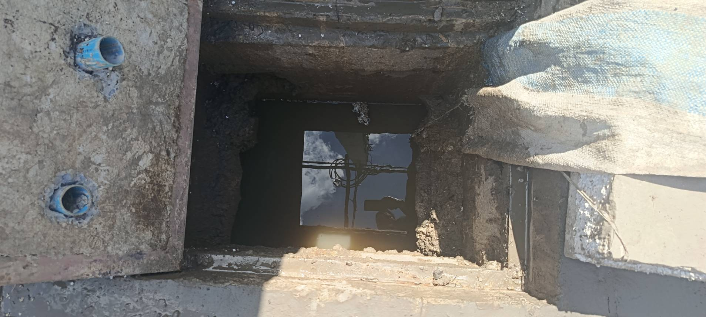
ผลงานหลังดำเนินการสภาพบ่อพักหลังดำเนินการตามขอบเขตงาน
เคลียร์ตะกอนและสิ่งกีดขวางก้นบ่อพักคอนกรีตสี่เหลี่ยม ให้น้ำระบายไหลถ่ายเทได้อย่างต่อเนื่อง พร้อมบันทึกภาพรายงาน
เข้าใจความต้องการเฉพาะของแต่ละกลุ่มงาน
วางแผนการทำงานให้เหมาะกับข้อจำกัดของพื้นที่ เพื่อความเรียบร้อยและการส่งมอบงานที่ราบรื่น
ลอกบ่อพักและท่อส่วนกลาง สำหรับหมู่บ้านที่มีลูกบ้านเข้าอยู่อาศัย
ดูแลตะกอนและสิ่งอุดตันในระบบระบายน้ำส่วนกลาง พร้อมวางแผนการทำงานให้เหมาะกับการสัญจรของลูกบ้าน และจัดทำหลักฐานเพื่อใช้ตรวจรับงานตามขอบเขตที่ตกลงกัน
สอบถามงานลอกท่อหมู่บ้านเคลียร์บ่อพักและท่อระบายน้ำ ก่อนตรวจรับและส่งมอบโครงการ
เคลียร์ดิน ทราย โคลน และเศษวัสดุที่สะสมระหว่างก่อสร้าง พร้อมภาพประกอบผลการดำเนินงานตามขอบเขตที่ตกลงกัน
ส่งรายละเอียดงานโครงการบริการลอกบ่อพักและท่อระบายน้ำ ตั้งแต่ประเมินหน้างานจนถึงรายงานผล
มุ่งเน้นการแก้ปัญหาตะกอนอุดตันตามสภาพหน้างานจริง ทำงานเป็นระบบ และมีหลักฐานประกอบการตรวจรับงาน
ลอกบ่อพัก
นำตะกอน ดิน โคลน และขยะสะสมออกจากบ่อพักตามขอบเขตงานที่ตกลงกัน
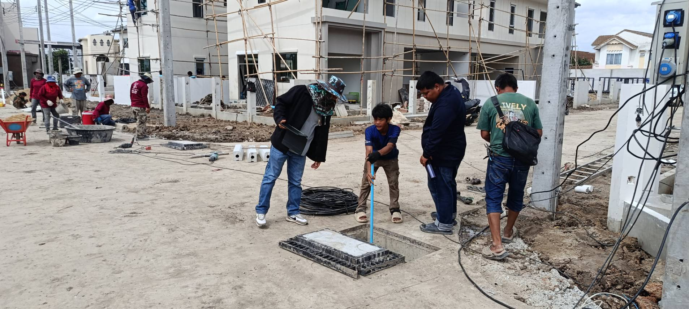
ลอกท่อเชื่อมระหว่างบ่อพัก
เคลียร์ตะกอนและสิ่งอุดตันในช่วงท่อเชื่อมต่อ โดยพิจารณาจากขนาดท่อ ระยะทาง และสภาพหน้างานจริง
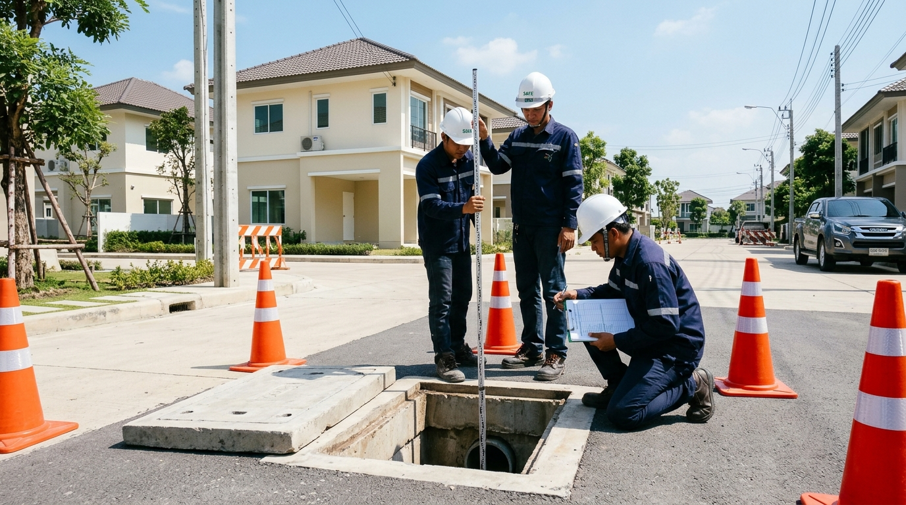
ภาพประกอบจำลองเคลียร์ระบบระบายน้ำก่อนส่งมอบ
สำหรับไซต์ก่อสร้างและงานโครงการที่ต้องเตรียมบ่อพักและท่อระบายน้ำให้พร้อมสำหรับการตรวจรับตามข้อกำหนดของงาน
ภาพก่อน-หลังและรายงานผลการทำงาน
บันทึกภาพและสรุปจุดที่ดำเนินการ เพื่อใช้ประกอบการตรวจรับงานตามรูปแบบและขอบเขตที่ตกลงกัน
ทำไมโครงการและนิติบุคคลจึงเลือกทีมตุ่นมุดท่อ
การทำงานที่ตรวจสอบได้จริง ตรงไปตรงมา และคำนึงถึงบริบทของพื้นที่เป็นสำคัญ
1. เข้าใจงานโครงการ
ประเมินขอบเขตงานตามประเภทพื้นที่ จำนวนบ่อ ระยะท่อ และข้อจำกัดของหน้างาน
2. มีหลักฐานการดำเนินงาน
จัดทำภาพประกอบและสรุปผล เพื่อใช้ตรวจสอบและตรวจรับงานตามขอบเขตที่ตกลงกัน
3. วางแผนการทำงานในพื้นที่
คำนึงถึงความปลอดภัย การเข้าออก และการสัญจรของผู้ใช้งานพื้นที่ระหว่างดำเนินงาน
ภาพจากการปฏิบัติงานจริงในพื้นที่
ภาพถ่ายจริงจากหน้างานหมู่บ้านจัดสรรและโครงการก่อสร้าง สะท้อนวิธีการปฏิบัติงาน อุปกรณ์ที่ใช้ และการจัดเก็บพื้นที่
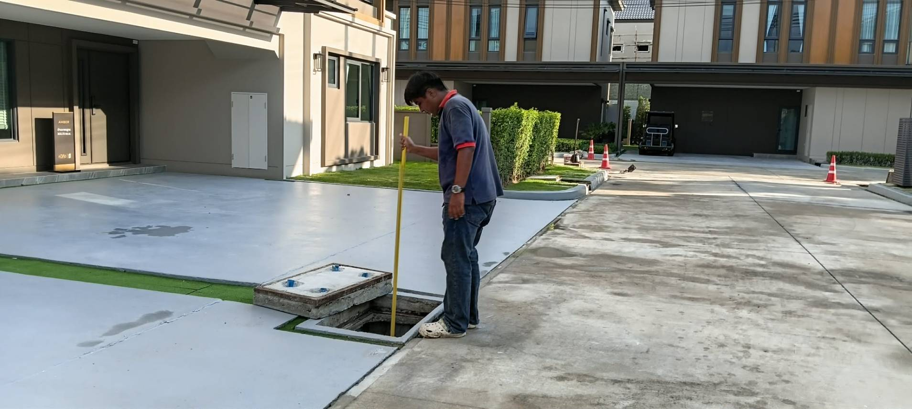
สำรวจสภาพและระดับตะกอนก่อนกำหนดขอบเขตงาน
ตรวจวัดความลึกและปริมาณตะกอนในบ่อพักคอนกรีตหน้าบ้าน
เตรียมพื้นที่ปฏิบัติงานโดยคำนึงถึงการสัญจรของลูกบ้าน
กั้นกรวยจราจรและจัดวางรถขนย้ายให้ลูกบ้านสัญจรได้สะดวก
นำตะกอนและโคลนสะสมออกจากบ่อพัก
ใช้กระบอกตักเลนดึงตะกอนขึ้นมาและถ่ายเทลงกระสอบทันที
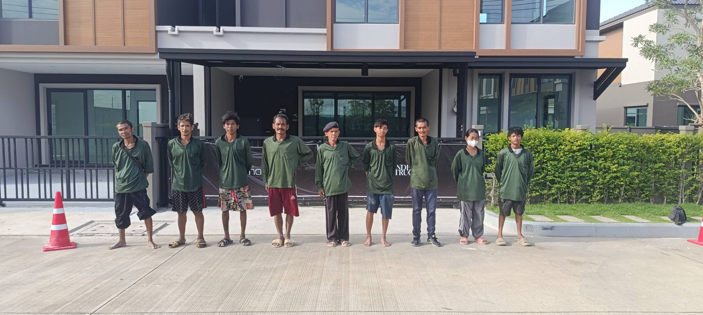
ทีมงานภาคสนามสำหรับงานโครงการ
ทีมงานพร้อมเครื่องมือปฏิบัติงานภาคสนามจริง
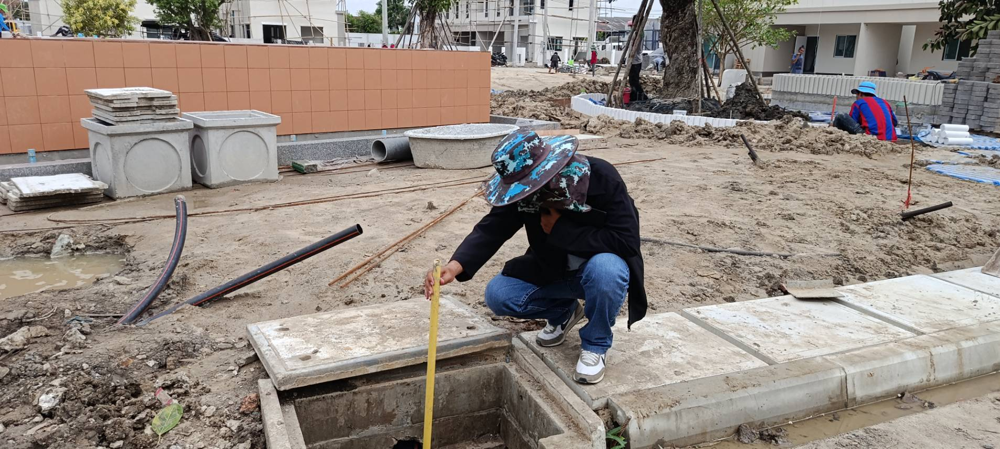
ตรวจเช็คบ่อพักในไซต์โครงการก่อสร้าง
ตรวจสอบบ่อพักคอนกรีตสี่เหลี่ยมช่วงงานเตรียมพื้นที่
ตรวจสอบท่อเชื่อมระหว่างบ่อพัก
เช็คการไหลและการอุดตันของแนวท่อใต้ผิวถนน
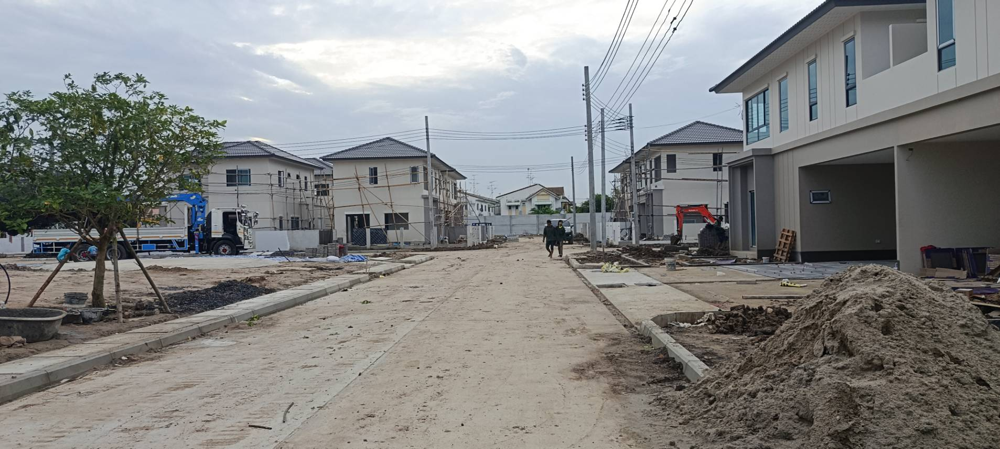
สภาพพื้นที่โครงการก่อสร้างบ้านจัดสรร
แนวบ่อพักและท่อระบายน้ำตามแนวถนนโครงการ
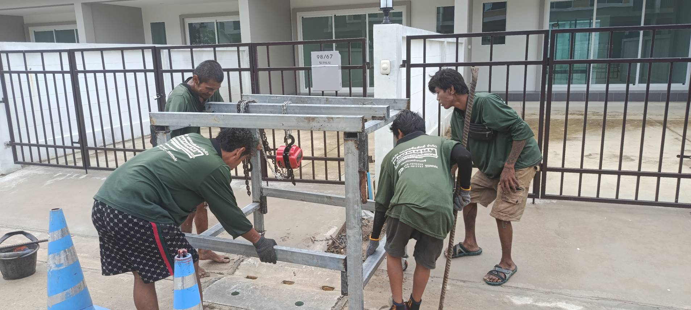
ติดตั้งเครื่องมือทุ่นแรงสำหรับบ่อพักลึก
โครงรอกโซ่ช่วยชักลากเลนในบ่อพักที่มีความลึกพิเศษ
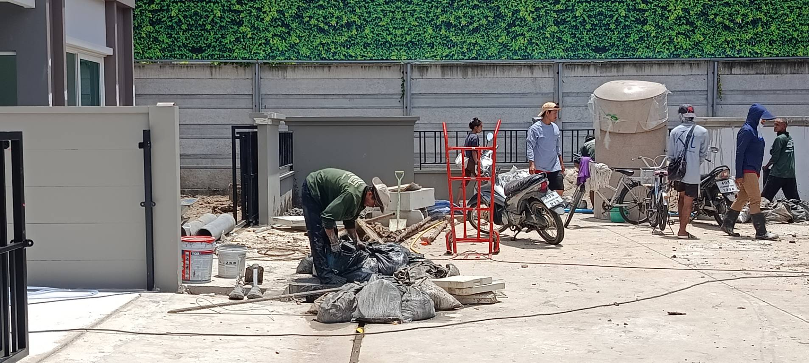
บรรจุตะกอนที่นำขึ้นมาเพื่อเตรียมขนย้าย
มัดปากกระสอบแน่นหนา วางเป็นระเบียบ ไม่ไหลเลอะพื้น
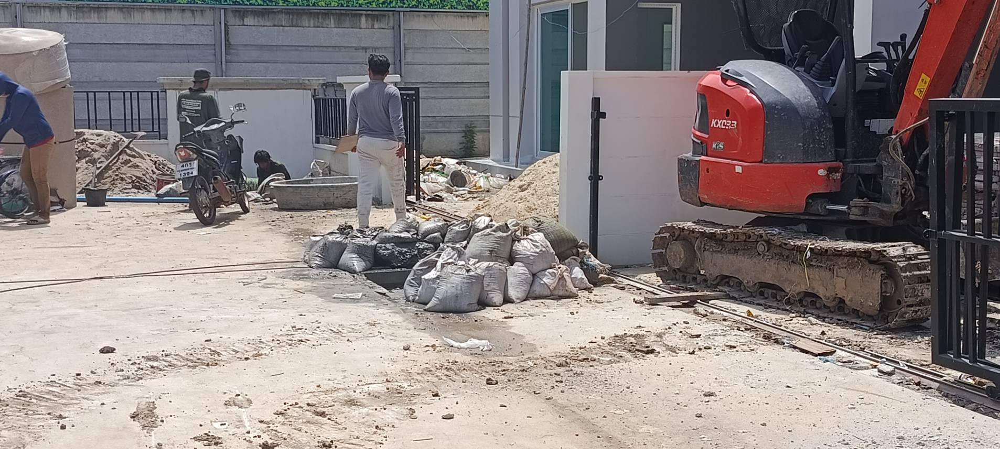
ปริมาณตะกอนที่นำขึ้นจากก้นบ่อพัก
ตะกอนดินเลนสะสมถูกตักบรรจุกระสอบพร้อมลำเลียง
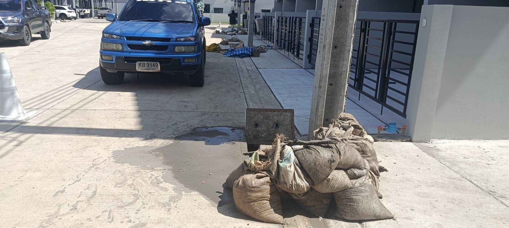
จัดเก็บวัสดุและเตรียมขนย้ายออกจากพื้นที่
ลำเลียงกระสอบตะกอนขึ้นรถกระบะนำออกจากพื้นที่โครงการ
สภาพบ่อพักหลังดำเนินการตามขอบเขตงาน
ก้นบ่อพักคอนกรีตสะอาด ให้น้ำระบายไหลได้สะดวก
เริ่มต้นงานลอกท่อกับทีมตุ่นได้ใน 4 ขั้นตอน
ขั้นตอนกระชับ เข้าใจง่าย ประสานงานสะดวก และตรวจสอบได้ทุกระยะ
ส่งรูปและข้อมูลหน้างาน
แจ้งพื้นที่ จำนวนบ่อ หรือระยะท่อโดยประมาณ พร้อมภาพสภาพหน้างานที่มี
ประเมินขอบเขตและเสนอราคา
ทีมสอบถามรายละเอียดเพิ่มเติม และนัดสำรวจเมื่อจำเป็น เพื่อกำหนดวิธีทำงานและราคา
เข้าดำเนินงานตามแผน
ประสานวันทำงาน เตรียมพื้นที่และมาตรการความปลอดภัย แล้วดำเนินงานตามขอบเขตที่ตกลง
ตรวจรับและสรุปผลการทำงาน
เก็บภาพประกอบ สรุปงานที่ดำเนินการ และส่งเอกสารตามเงื่อนไขที่ตกลง
ทีมงานภาคสนามสำหรับงานบ่อพักและระบบระบายน้ำโครงการ
เราให้ความสำคัญกับการเตรียมพื้นที่ วิธีทำงานที่เหมาะกับสภาพบ่อพัก การประสานงานในโครงการ และการเก็บรายละเอียดหลังดำเนินงาน เพื่อให้ฝ่ายที่เกี่ยวข้องสามารถตรวจสอบผลการทำงานได้
ปรึกษาทีมงานผ่าน LINEข้อสงสัยก่อนตัดสินใจใช้บริการ
รวบรวมคำตอบตรงไปตรงมาตามหลักปฏิบัติงานจริงในพื้นที่
ทีมจะวางแผนป้องกันและลดผลกระทบต่อพื้นที่รอบบ่อพัก พร้อมเก็บพื้นที่หลังจบงาน ทั้งนี้ขึ้นอยู่กับสภาพหน้างานและข้อจำกัดของแต่ละจุดปฏิบัติงานครับ
ทีมสามารถประเมินทางเข้าออกและเลือกวิธีขนย้ายอุปกรณ์ให้เหมาะกับพื้นที่ได้ครับ แนะนำให้ส่งภาพถนนหรือข้อมูลความกว้างทางเข้าให้ทีมประเมินก่อน
สามารถจัดทำภาพก่อน-ระหว่าง-หลัง และสรุปจุดดำเนินการตามรูปแบบและขอบเขตที่ตกลงกัน เพื่อใช้ประกอบการตรวจรับงานได้ครับ
ราคาพิจารณาจากจำนวนบ่อ ระยะท่อ สภาพตะกอน ความยากในการเข้าพื้นที่ และการขนทิ้ง สามารถส่งรูปพร้อมจำนวนบ่อคร่าว ๆ มาให้ทีมประเมินเบื้องต้นได้ครับ
ได้ครับ แจ้งพื้นที่โครงการ จำนวนบ่อคร่าว ๆ หรือส่งภาพหน้างานที่มีมาก่อน ทีมจะช่วยสอบถามข้อมูลที่จำเป็น และแจ้งว่าต้องสำรวจเพิ่มเติมก่อนเสนอราคาหรือไม่
มีงานลอกบ่อพักหรือท่อระบายน้ำให้ประเมิน?
ส่งรายละเอียดเบื้องต้นทาง LINE ได้เลย ไม่จำเป็นต้องมี BOQ หรือจำนวนบ่อครบทุกจุดตั้งแต่ครั้งแรก
- 1. พื้นที่โครงการ (พิกัด / ซอย / ย่าน)
- 2. จำนวนบ่อหรือระยะท่อโดยประมาณ
- 3. ภาพสภาพหน้างาน (ถ้ามี)
- 4. ช่วงเวลาที่ต้องการดำเนินงาน
เตรียมข้อความสำหรับติดต่อ LINE
กรอกข้อมูลเบื้องต้นเพื่อสรุปเป็นข้อความ จากนั้นคัดลอกไปส่งในแชท LINE @tunnmudto เพื่อให้ทีมงานประเมินราคา